Early-warning systems that help job seekers spot scams before it’s too late
SafeGuard catches job scams while people browse, guides them when something feels off, and helps them recover if they get hit. Our team designed it in 6 weeks and placed 2nd at the final pitch.
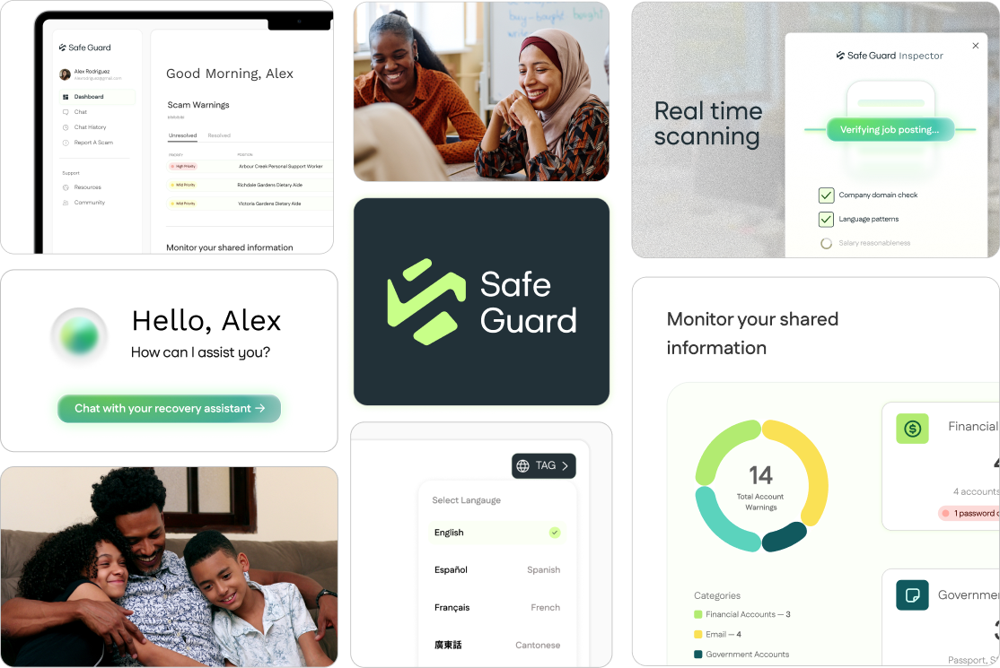
- Role
- Research Lead, UI Design, Pitch Storytelling
- Team
- Francine. P, Hayat. G, Mohriz. A
- Project Managers
- Julia Seo, Hala T.
- Timeline
- 6 Weeks
- Award
- 2nd Place
Overview
Most scam tools step in after the damage is done. We designed for the moment of decision.
Red Thread Innovations (RTI) runs a pitch challenge where student teams design for a real social problem. Our brief was online harm: help vulnerable people recognize, resist and recover from fraud, misinformation and manipulative content. We had 6 weeks to pick a problem, research it, prototype, test, and pitch to a panel.
Skip to the final solution ↓My role
I was the research lead on a team of four, but I was spread throughout the whole design process.
01
Research lead
Led our research into the problem space, the numbers behind it, and the tools already out there.
02
UI design
Helped design screens for the browser extension, chatbot, dashboard and community page.
03
Pitch storytelling
Helped shape Alex’s story so our research, features and pitch all followed one person.
The problem
Job hunting has become one of the most exploited moments online, and newcomers feel it most.
With unemployment rising, people are applying to more jobs, faster, across LinkedIn, email and chat apps. Scammers use that urgency. Newcomers to Canada are hit hardest: unfamiliar hiring norms, financial pressure, and often a language barrier.
73%
of adults report some form of online scam or attack (Pew Research Center, 2025)
$501M
lost to job scams in 2024, up from $90M in 2020 (FTC, 2024)
9 in 10
new Canadians surveyed are worried about financial fraud (TD Survey, 2024)
Who we designed for
We built every decision around one person: Alex.
Alex Rodriguez, 26
Goals
- Find stable work quickly
- Not miss real opportunities
- Keep personal information safe
Pain points
- Decision fatigue from high application volume
- Pressure to reply fast
- Unfamiliar hiring norms
Needs
- Clear signals about scam risk
- Help across LinkedIn, email and chat apps
- A plan if something goes wrong
“The hiring person just ghosted me, and I already paid for the job application. I’m so stressed, and I don’t know what to do next.”
Alex, after the scam
RTI’s brief
How might we help people, especially vulnerable groups, recognize, resist and recover from online harm caused by fraud, misinformation and manipulative content?
Our design problem
How might we protect job seekers, especially newcomers, from exploitation during periods of economic vulnerability?
Research
The brief was wide open, so our first job was choosing what to focus on.
Each of us researched one kind of online harm and the group it affects most. Then we scored them side by side in a decision matrix built from the brief’s requirements, with the most weight on underserved markets. Employment scams scored highest, at 128.
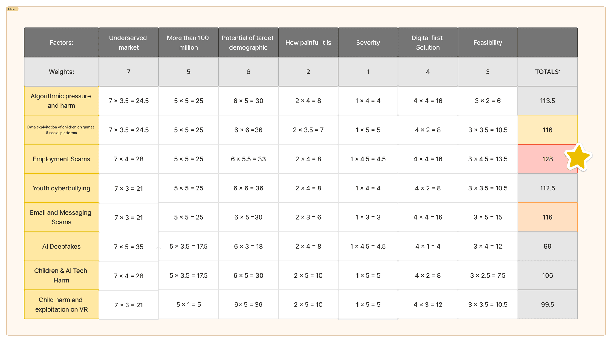
Market gaps
What’s missing?
Our competitive analysis found that existing tools are fragmented. None of them cover the whole scam lifecycle: prevention, mitigation and recovery.
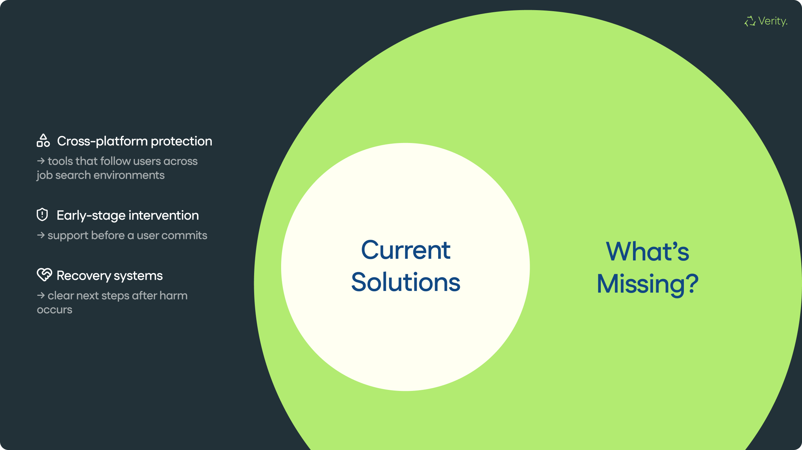
Key findings
Scams aren’t only a security problem. They’re an emotional design problem.
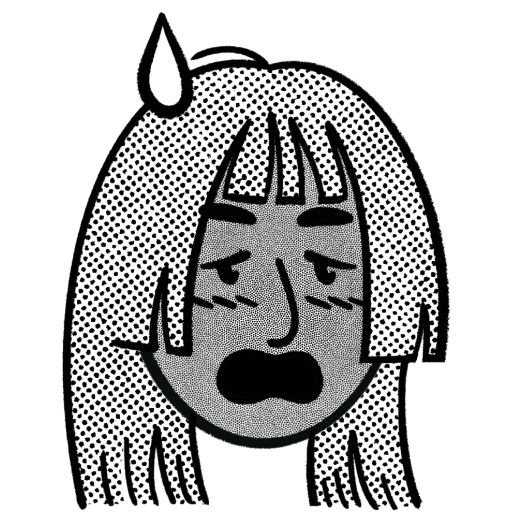
01
Vulnerability is situational.
Victims aren’t naive. Anyone slips during financial stress, isolation, overload or urgency. So SafeGuard can’t expect perfectly rational decisions. It has to lower the pressure.
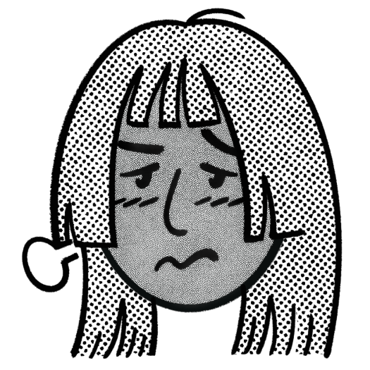
02
Help shows up after it’s needed.
A scam moves from LinkedIn to email to Telegram to a payment request. Most tools only watch one platform, and only react once someone clicks or pays.
03
Recovery is barely designed.
Victims deal with shame, anxiety and distrust long after. Most products stop at detection. Very few help people get back on track.
Design principles
These findings became four rules for every screen.
Explain, don’t just warn.
Show why something looks risky, in plain language, so people get better at spotting it themselves.
Reduce shame.
People don’t report scams because they’re embarrassed. Feel supportive, never punitive.
Intervene before commitment.
Step in during the urgent moment, before money or information is gone.
Follow the user, not the platform.
Scams move freely between apps. Protection should too.
Ideation
Instead of one app that does everything, we designed separate features that work together.
We each ran crazy 8s on both halves of the problem: catching scams early, and helping people after. Then we kept the ideas that covered a different stage of the scam, so together they’d close all three market gaps.
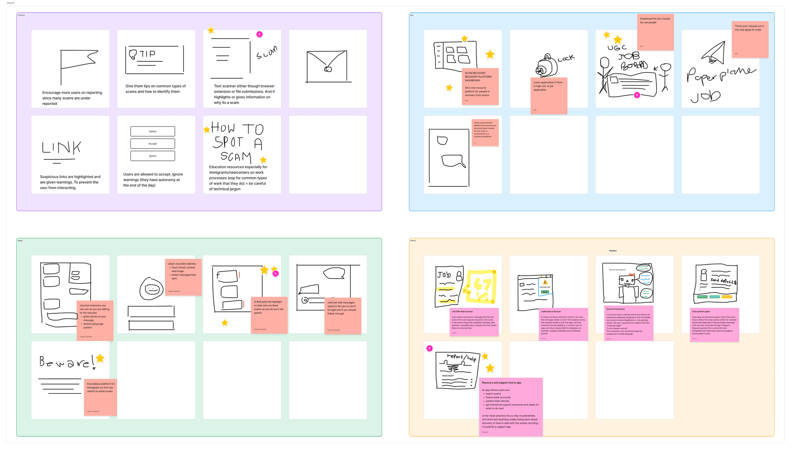
Prevention
A browser extension that checks job posts while you browse.
Mitigation
A recovery assistant and a dashboard for when something feels off.
Recovery
Chat summaries and community alerts for after harm happens.
Our first prototype was called Verity. That’s the version we took into testing.
Testing
We tested Verity with another team in a combined concept and usability session.
We opened with a short presentation of the problem and the features, so participants knew what the app was for. Then they worked through the prototype on their own, answered concept and usability questions, and we finished with a group discussion.
Concept and usability answers from one participant
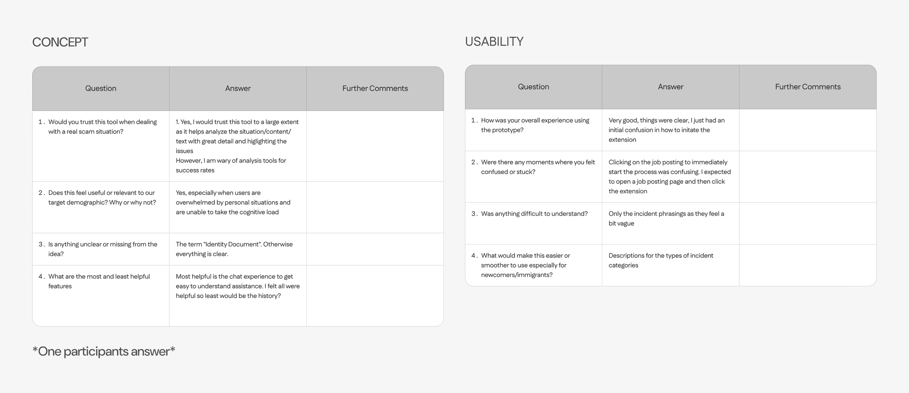
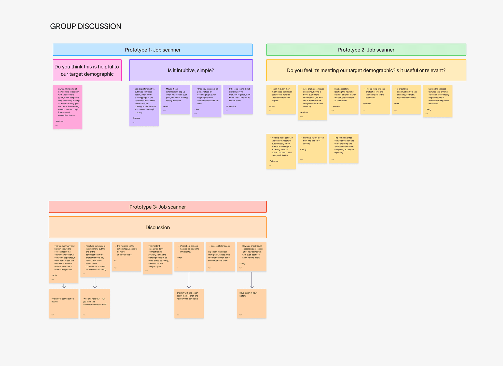
What worked
People trusted it to break down a real scam and said it would help when someone is too overwhelmed to think clearly. The chat felt like the easiest way in.
What didn’t
It felt too broad for the people we said we were designing for. Starting the extension was unclear, and the dashboard used terms people didn’t understand.
Iteration
The biggest note: it needed to feel built for newcomers, not for everyone.
We took the three clearest pieces of feedback and reworked each feature, renaming Verity to SafeGuard along the way.
01
Browser extension
FeedbackPeople couldn’t tell how to start the scan, and didn’t notice the job had already been reported.
ChangeClearer controls, a more obvious “Report job posting” button, and a confirmation at the end so people know the report went through.
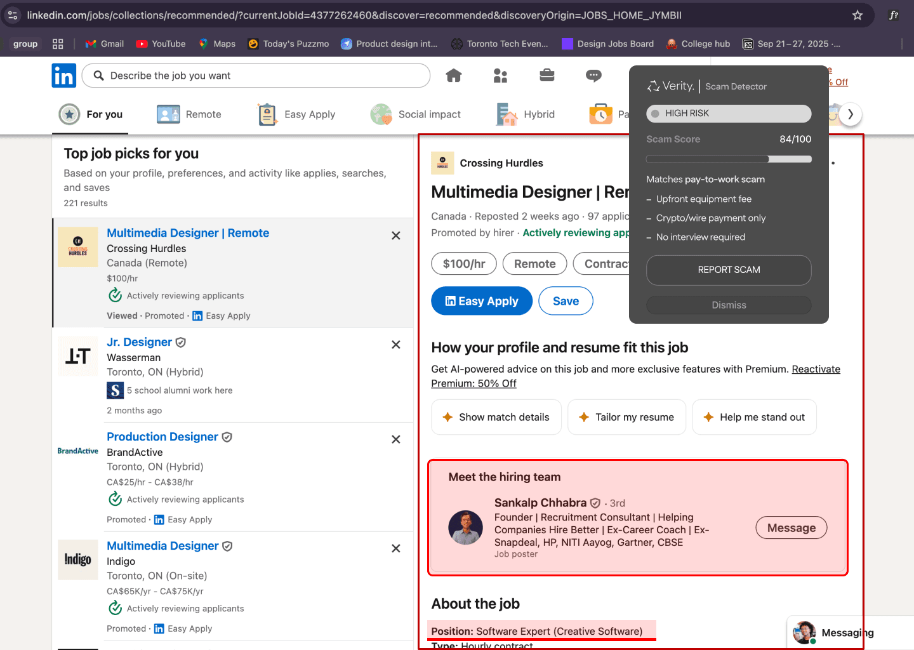
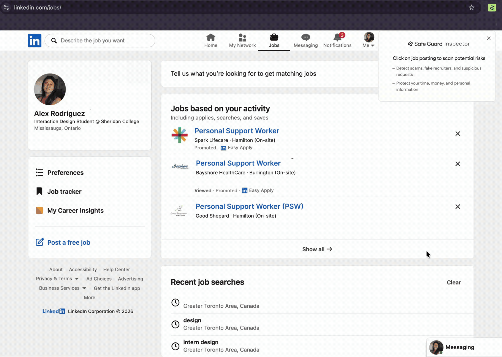
02
Chatbot
FeedbackIn the group discussion, people agreed the platform felt too general and should be tailored to newcomers.
ChangeAdded a language switcher to the chatbot. Language was one of the biggest barriers for newcomers, and the moment you think you’re being scammed is the worst time to read a second language.
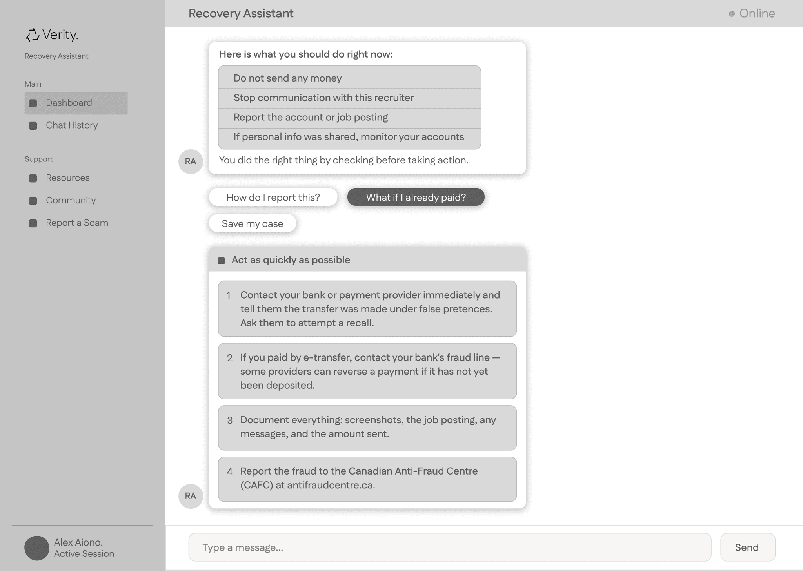
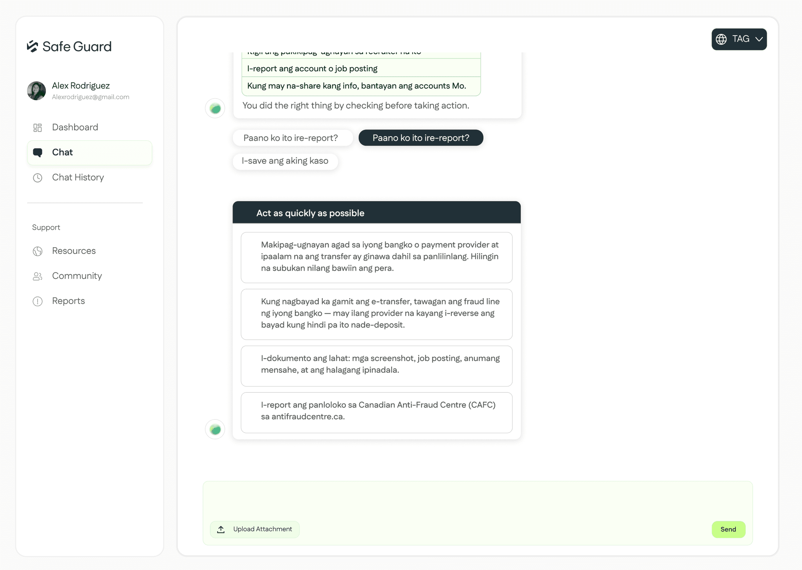
03
Dashboard
FeedbackThe account categories didn’t explain what they monitored or why it mattered, and the “Action needed” reminder confused people.
ChangeAdded a short description to every category, and replaced the reminder with a list of scam warnings pulled from across the platform.
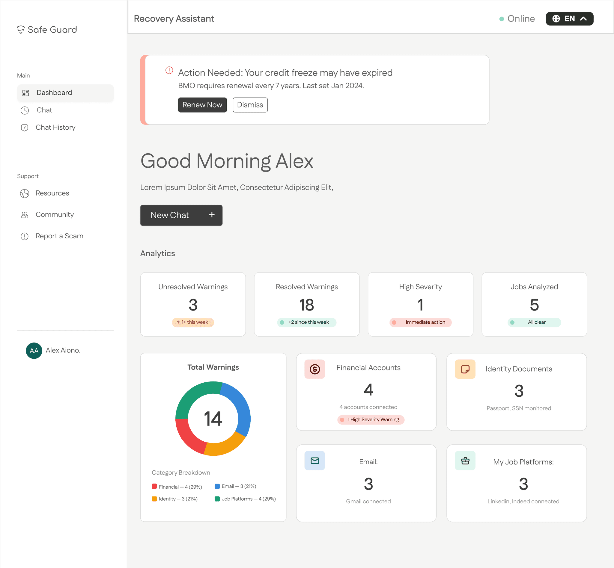
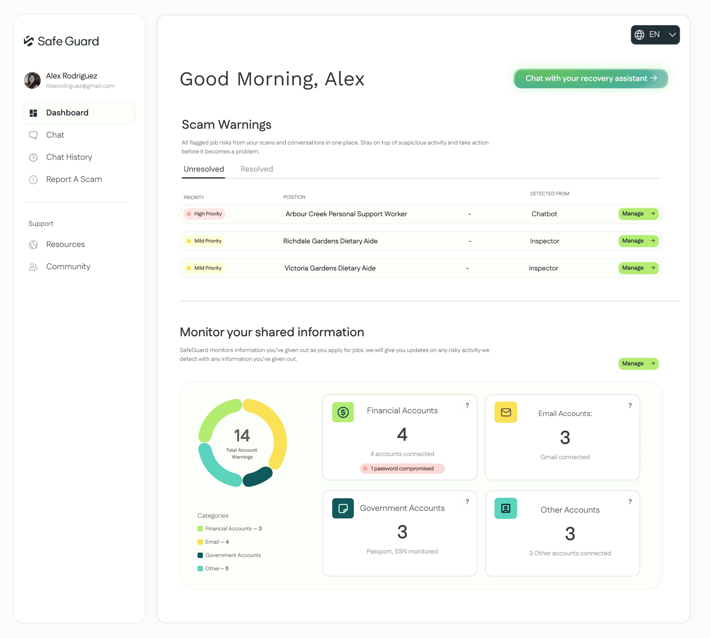
Final solution
SafeGuard: one ecosystem that follows job seekers through the whole hiring journey.
Five features, each covering a different stage: prevention while people browse, mitigation when something feels off, and recovery after harm.
Prevention
01 Inspector
A browser extension that scans job posts and messages for impersonation, urgent language, unrealistic salaries, odd onboarding steps and mismatched domains. It explains why something looks risky, not just that it does.
Mitigation
02 Recovery assistant
A multilingual chatbot for the moment something feels off. Alex can ask in her own language whether a request is normal and get calm, step-by-step guidance.
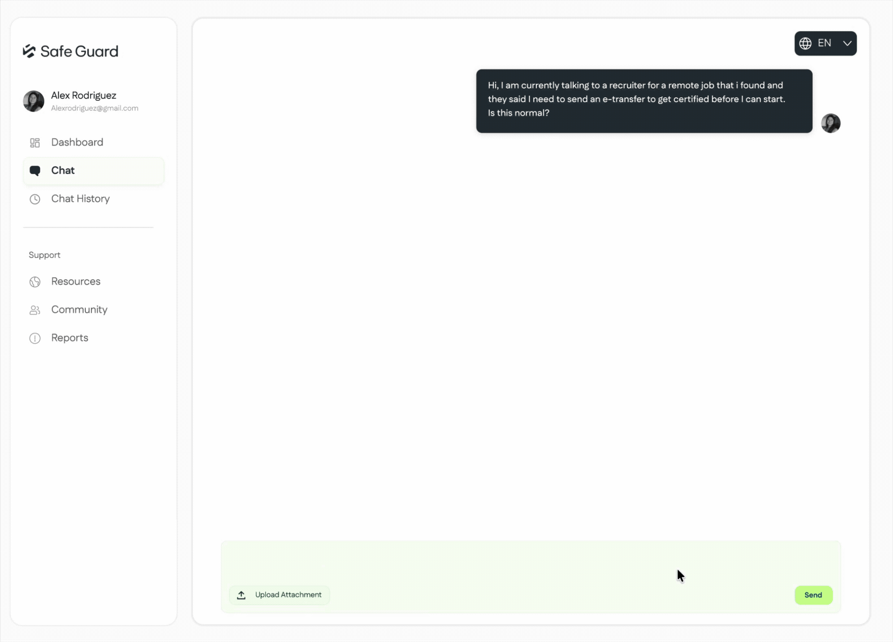
Mitigation
03 Chat summary
Every conversation becomes a short summary: what happened, the risk level, the scam type and what to do next. Nobody has to piece it together under stress.
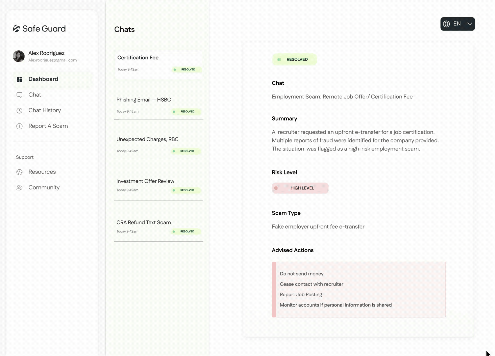
Mitigation
04 Risk dashboard
One view of compromised accounts, linked services, government ID exposure and live warnings. Scam fallout is spread across many systems, so we brought it into one place.
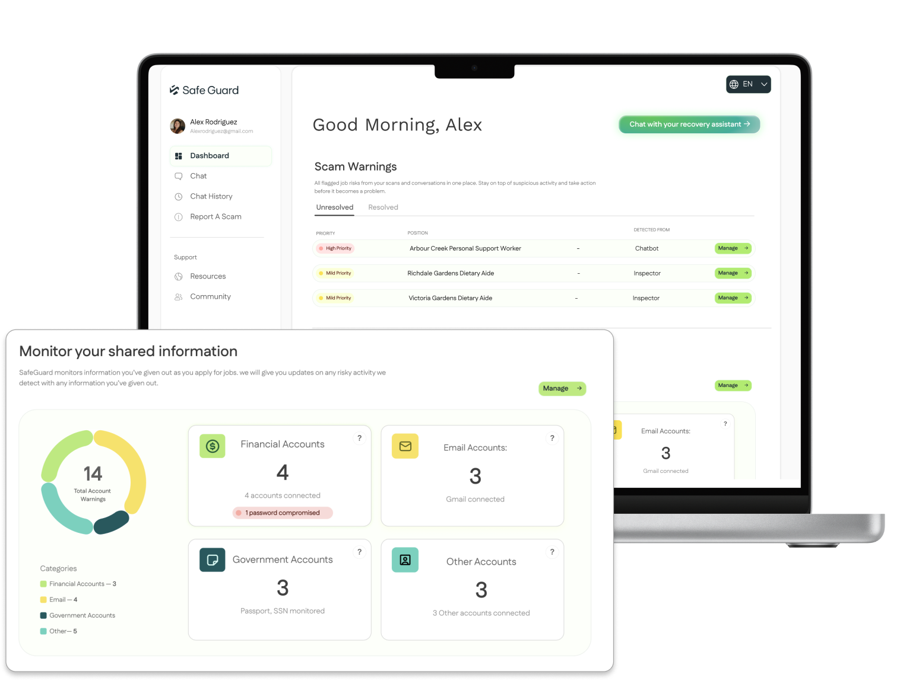
Recovery
05 Community alerts
People can report scam patterns and see alerts about new ones. Staying safe becomes something people do together, not alone.
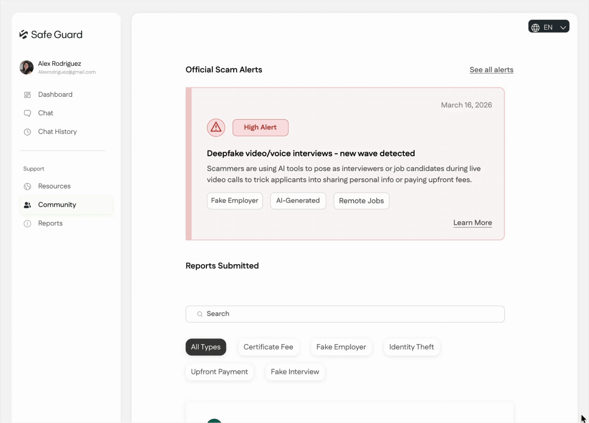
Outcome
SafeGuard placed 2nd at RTI’s final pitch.
This project changed my perspective on how I think about digital safety.
Before SafeGuard, I viewed online scams primarily as cybersecurity problems. Through research, I realized they are also emotional and systemic design problems. People are expected to make high-stakes decisions quickly, often under pressure, with very little clarity or support. Platforms are optimized for speed and engagement, not necessarily for helping users slow down and make informed decisions.
My takeaways
Support over warnings.
Instead of designing another warning system, we focused on reducing emotional pressure during moments of uncertainty and helping people feel supported before, during, and after harm occurs.
The power of storytelling.
Our persona Alex wasn’t a placeholder. She was the thread that tied our research, interface decisions, and final pitch together. Having that emotional anchor made our work stronger and more human.
Collaboration takes flexibility.
Team projects push flexibility in ways individual work never does. Priorities shift, ideas evolve, roadblocks appear out of nowhere, and design challenges rarely go to plan. You have to adapt quickly, stay open to feedback, and trust the process even when it feels messy.
If we kept going
- Test SafeGuard with newcomers directly, not just peers.
- Expand beyond job scams to marketplace, messaging and financial fraud.
- Partner with job platforms so warnings appear inside the listing itself.